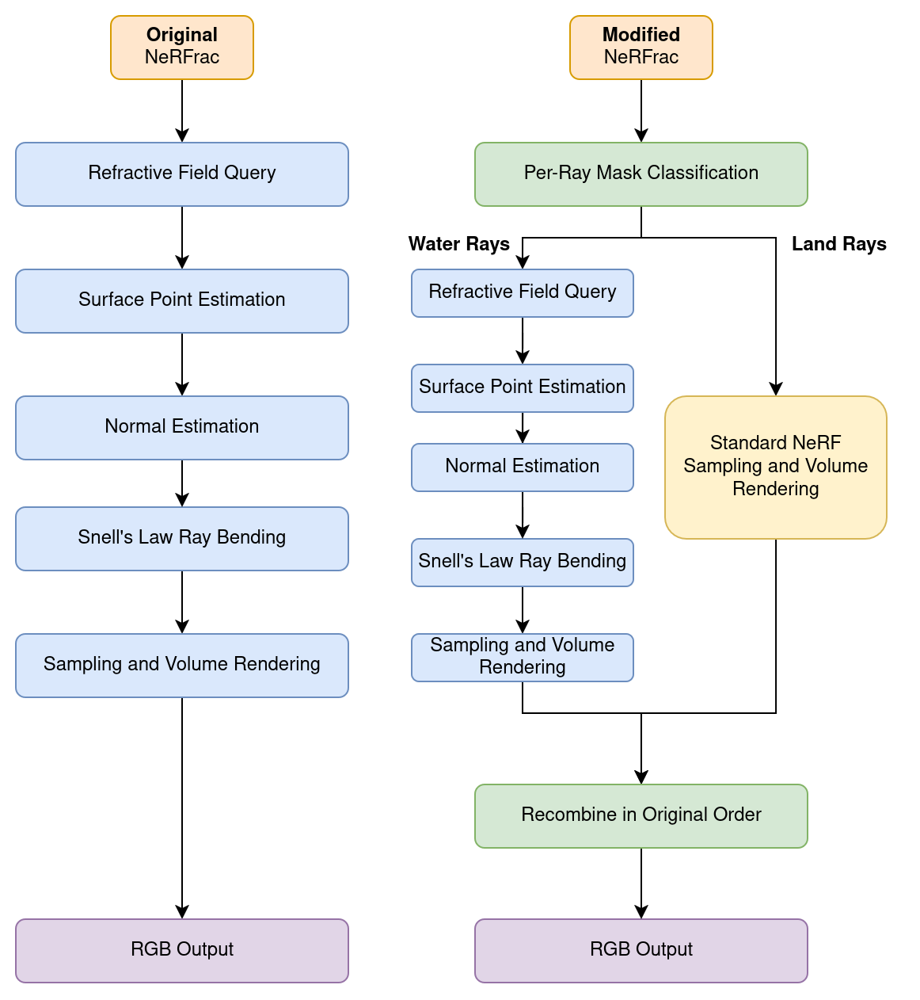
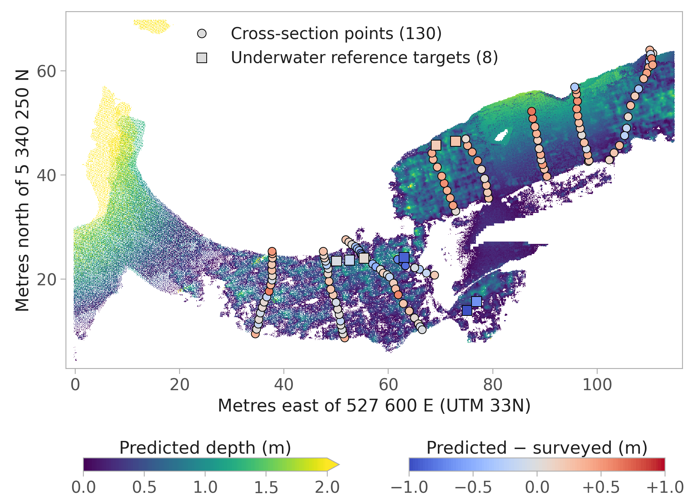
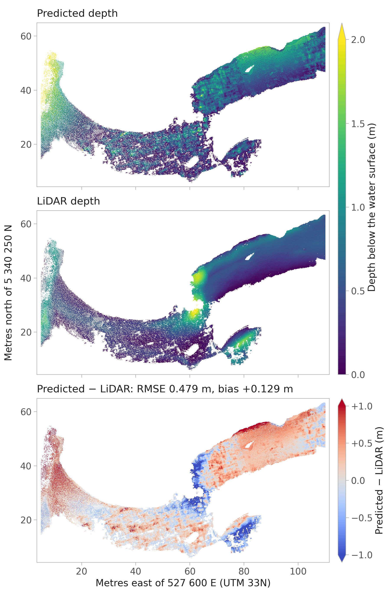

Overview
Light bends where it enters the water, so a riverbed seen from the air looks about 25% shallower than it is. I built an end-to-end pipeline that recovers the true depth from RGB drone images with two methods:
- NeRFrac (Zhan et al., ICCV 2023), a neural radiance field trained per scene that learns the water surface and refracts every ray through it with Snell's law. I extended it from a fixed 3 × 3 camera array above an aquarium to drone imagery, with up to 280 images per scene.
- VGGT (Wang et al., CVPR 2025), a pretrained transformer that predicts depth and camera poses in one forward pass. It does not model refraction, so I correct its depths with Snell's law afterwards.
On the Pielach River in Austria, the best NeRFrac model reaches an RMSE of 0.34 m on 138 survey points up to 1.2 m deep, measured below the surveyed water surface. VGGT reaches 0.27 m on the 8 underwater reference targets.
Method
Both methods share one postprocessing: depth below the water surface on a 0.1 m grid, validated against 8 underwater targets, 130 cross-section points and a bathymetric LiDAR point cloud.
flowchart TD
images["Drone images"] --> poses["Camera poses (COLMAP)"]
images --> masks["Water masking (SAM 3)"]
images --> vggt["VGGT, one forward pass"]
poses --> nerfrac["Modified NeRFrac, trained per scene"]
masks --> nerfrac
masks --> snell["Refraction correction (Snell's law)"]
vggt --> snell
nerfrac --> geo["Georeferencing (Umeyama, UTM 33N)"]
snell --> geo
geo --> bathy["Bathymetry extraction (depth below the water surface)"]
bathy --> val["Validation (targets, cross-sections, LiDAR)"]
My version of NeRFrac routes water and land rays separately, adds the distortion and cross-view depth consistency losses, and saves every rendered view with its depth.

Results
The Pielach River was flown in October 2024 at 80 m (Mandlburger et al., 2025). I used three image sets: 9 nadir images, 9 oblique images (6 with the camera pitched 45-50° below the horizon, 3 near-nadir), and all 280 images within 50 m of a centre point (100 nadir, 180 oblique).
Depth is measured below the surveyed water surface model (WSM), without scale correction. Targets are the 8 underwater reference targets (0.67-1.19 m deep). All adds 130 cross-section points, 138 points in total. LiDAR compares the underwater cells with the bathymetric LiDAR point cloud on a 0.1 m grid. RMSE is in metres, and |ρ| is the absolute Spearman rank correlation between predicted and surveyed depth.
| Method | Images | Setup | Targets | All | LiDAR | ||
|---|---|---|---|---|---|---|---|
| RMSE | RMSE | |ρ| | RMSE | |ρ| | |||
| NeRFrac | 9 oblique | distortion loss, 256 samples | 0.54 | 0.34 | 0.48 | 0.48 | 0.39 |
| NeRFrac | 9 oblique | distortion loss, 64 samples | 0.51 | 0.46 | 0.27 | 0.49 | 0.21 |
| NeRFrac | 9 oblique | 64 samples | 0.44 | 0.88 | 0.10 | 0.65 | 0.24 |
| NeRFrac | 280 nadir and oblique | distortion loss, 256 samples | 0.40 | 0.58 | 0.34 | 0.49 | 0.41 |
| NeRFrac | 280 nadir and oblique | 256 samples | 0.45 | 1.09 | 0.35 | 1.04 | 0.44 |
| VGGT | 9 nadir | no Snell correction | 0.27 | 0.59 | 0.16 | 0.57 | 0.08 |
| VGGT | 9 nadir | single-view Snell correction | 0.29 | 0.59 | 0.22 | 0.58 | 0.11 |
NeRFrac on the 9 oblique images with distortion loss and 256 samples has the lowest error on all points (0.34 m) and against the LiDAR (0.48 m). VGGT without Snell correction has the lowest error on the 8 targets (0.27 m). The single-view Snell correction raises VGGT's |ρ| from 0.16 to 0.22 on all points and from 0.08 to 0.11 against the LiDAR.
All NeRFrac models in the table are trained at 1024 × 683 px for 950k iterations with the water masks, the cross-view depth consistency loss and the smoothness term, in 9-76 h each on one A100 (80 GB). "256 samples" means 256 coarse and 256 fine samples per ray with 4096 rays per batch, "64 samples" means 64 + 64 with 512 rays. The depth is taken at the sample with the highest weight on each ray (mode depth). Predictions deeper than 5 m or above the WSM are discarded, which leaves the oblique model without distortion loss with predictions at 136 of the 138 points. VGGT runs on the 9 images at 518 × 350 px in under 14 s, and its predictions cover 116 of the 138 points.


Credits and licenses
- NeRFrac by Yifan Zhan, Shohei Nobuhara, Ko Nishino and Yinqiang Zheng (ICCV 2023). It builds on NeRF and nerf-pytorch. The repository contains a modified copy.
- VGGT (Wang et al., CVPR 2025, University of Oxford and Meta AI) and SAM 3 (Carion et al., 2025, Meta) are installed separately and come with their own licenses.
- Pielach River research dataset October 2024 by G. Mandlburger, TU Wien, licensed CC BY 4.0. It is described in Mandlburger et al. (2025). The point clouds, the depth grids with their errors against the LiDAR, the survey points and the two maps on this page are derived from it (reconstructed, thinned, re-plotted) and are licensed CC BY 4.0. The LiDAR riverbed of the 3D view is made from the river bottom points of the dataset's classified LiDAR point cloud, gridded to 0.1 m cells with the median elevation of their points, and is licensed CC BY 4.0 as well.
- The thesis was supervised by Prof. Dr. Begüm Demir and advised by Dr.-Ing. Panagiotis Agrafiotis.
- The code is MIT licensed, see LICENSE. Third-party code keeps its own license, see THIRD_PARTY_NOTICES.md.
- This page uses three.js and mermaid, both MIT licensed and loaded from jsDelivr. Its own code is MIT licensed as well.